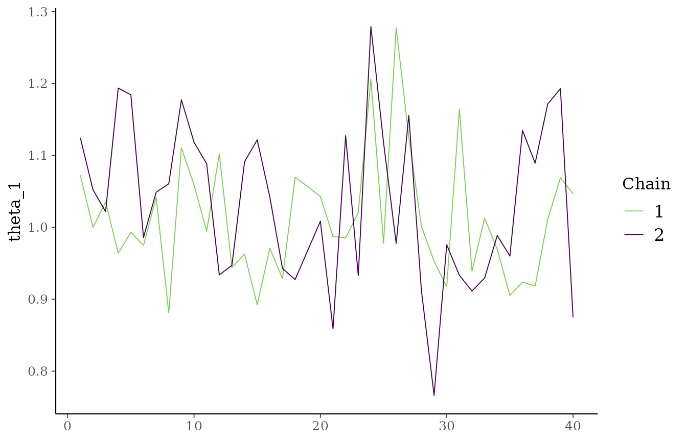
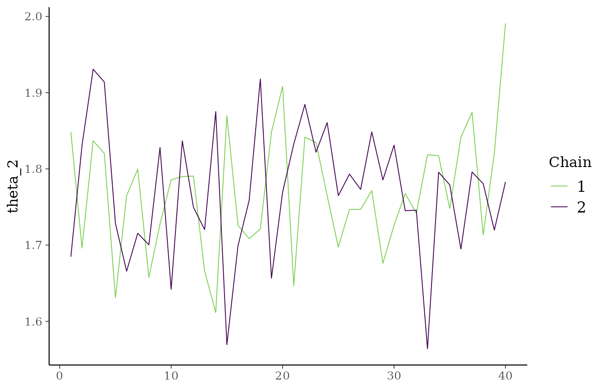
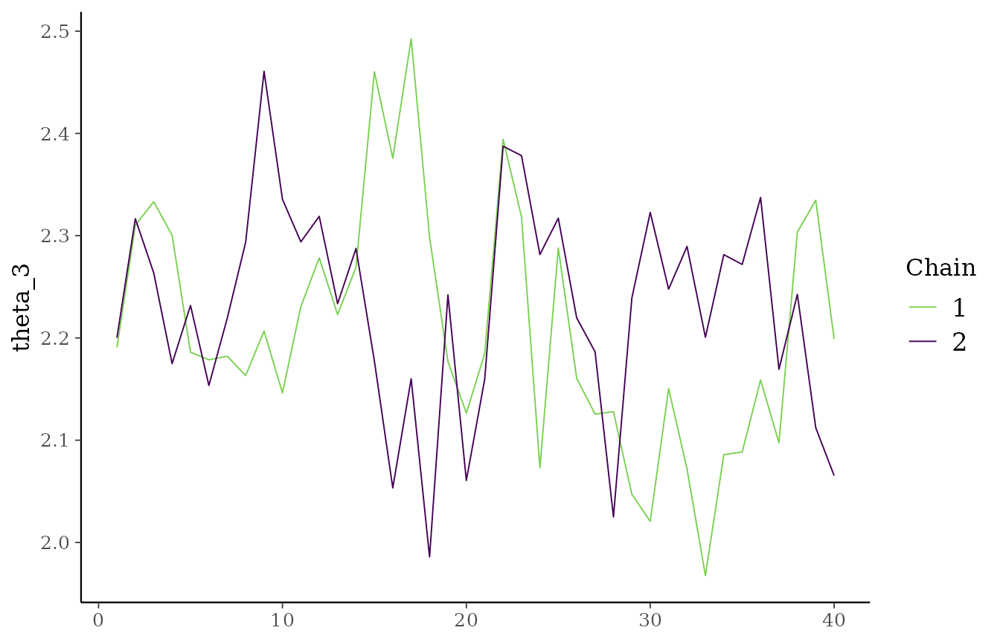
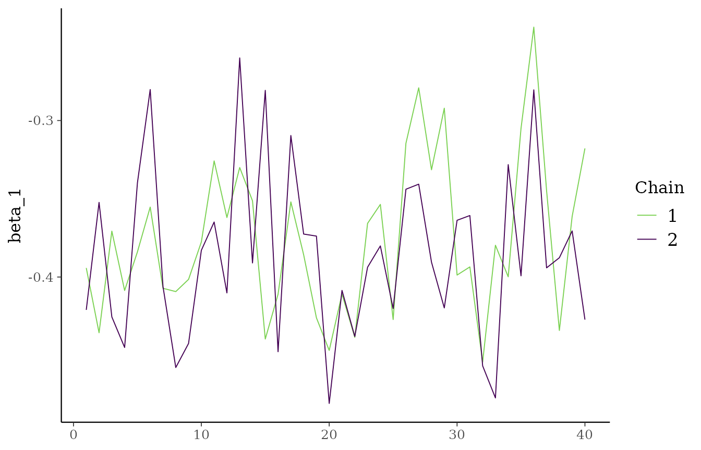
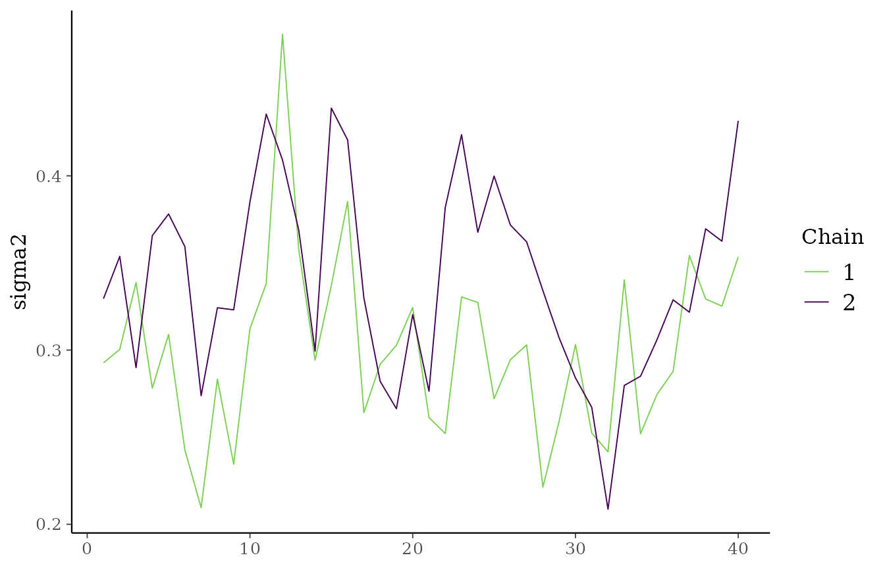

Overview
exnexSurv can run multiple independent MCMC chains and,
when requested, distribute them across R-level parallel workers. The C++
sampler still handles one chain per call; the R bridge coordinates the
chain loop and combines the post-warmup draws.
Use:
-
chainsfor the total number of independent chains, -
parallel_chainsfor how many chains to run concurrently.
parallel_chains must be less than or equal to
chains.
Simulate data
library(exnexSurv)
library(survival)
simulate_surv_data <- function(
theta,
sigma2,
beta = NULL,
n_per_group = 40,
censor_min = 4,
censor_max = 12,
seed = NULL
) {
if (!is.null(seed)) {
set.seed(seed)
}
groups <- rep(seq_along(theta), each = n_per_group)
age_std <- rnorm(length(groups))
mean_log_time <- rep(theta, each = n_per_group)
if (!is.null(beta)) {
mean_log_time <- mean_log_time + beta * age_std
}
log_time <- rnorm(length(groups), mean = mean_log_time, sd = sqrt(sigma2))
true_time <- exp(log_time)
censor_time <- runif(length(groups), min = censor_min, max = censor_max)
data.frame(
time = pmin(true_time, censor_time),
event = as.integer(true_time <= censor_time),
group = factor(groups),
age_std = age_std
)
}
sim_data <- simulate_surv_data(
theta = c(1.0, 1.6, 2.1),
sigma2 = 0.25,
beta = -0.30,
seed = 9201
)Fit two chains in parallel
fit_parallel <- exnex_surv(
Surv(time, event) ~ group + age_std,
data = sim_data,
iter = 60,
warmup = 20,
chains = 2,
parallel_chains = 2,
seed = 9201
)
print(fit_parallel, show_trace = FALSE)
#> <exnex_surv model>
#> Draws: 80 total post-warmup samples
#> 40 post-warmup samples per chain
#> Groups: 3 | Covariates: 1
#> MCMC: iter = 60 , warmup = 20 , chains = 2
#>
#> parameter mean sd q05 q50 q95
#> theta_1 1.0228722 0.09968104 0.8918244 1.0047708 1.1926777
#> theta_2 1.7698594 0.08266481 1.6414429 1.7703639 1.9085733
#> theta_3 2.2190697 0.11007270 2.0460476 2.2195088 2.3877982
#> beta_1 -0.3805380 0.05226572 -0.4544758 -0.3867217 -0.2803758
#> sigma2 0.3204454 0.05609064 0.2412223 0.3210869 0.4240346The fitted object stores the combined post-warmup draws from both
chains. If you used iter = 60 and warmup = 20
with chains = 2, the posterior sample table contains
80 rows in total, or 40 rows per chain.
Fit more chains than workers
fit_four_chains <- exnex_surv(
Surv(time, event) ~ group + age_std,
data = sim_data,
iter = 60,
warmup = 20,
chains = 4,
parallel_chains = 2,
seed = 9201
)
print(fit_four_chains, show_trace = FALSE)
#> <exnex_surv model>
#> Draws: 160 total post-warmup samples
#> 40 post-warmup samples per chain
#> Groups: 3 | Covariates: 1
#> MCMC: iter = 60 , warmup = 20 , chains = 4
#>
#> parameter mean sd q05 q50 q95
#> theta_1 1.0167982 0.09221235 0.8949872 1.0046741 1.1821268
#> theta_2 1.7741504 0.09281588 1.6301872 1.7726403 1.9159255
#> theta_3 2.2131117 0.11246031 2.0201792 2.2212840 2.3811103
#> beta_1 -0.3804203 0.05388983 -0.4628156 -0.3854931 -0.2754689
#> sigma2 0.3114648 0.05345781 0.2313879 0.3058044 0.4207686This runs four independent chains while scheduling only two workers at a time.
Traceplots with all chains
plot(
fit_parallel,
parameters = c("theta_1", "theta_2", "theta_3", "beta_1", "sigma2"),
ask = FALSE
)




Each parameter panel shows all chains together, which makes it easier to compare mixing and overlap across chains.
Compare to sequential execution
fit_sequential <- exnex_surv(
Surv(time, event) ~ group + age_std,
data = sim_data,
iter = 60,
warmup = 20,
chains = 2,
parallel_chains = 1,
seed = 9201
)
identical(fit_parallel$draws, fit_sequential$draws)
#> [1] TRUEChanging parallel_chains affects only how the chains are
scheduled, not the model itself.